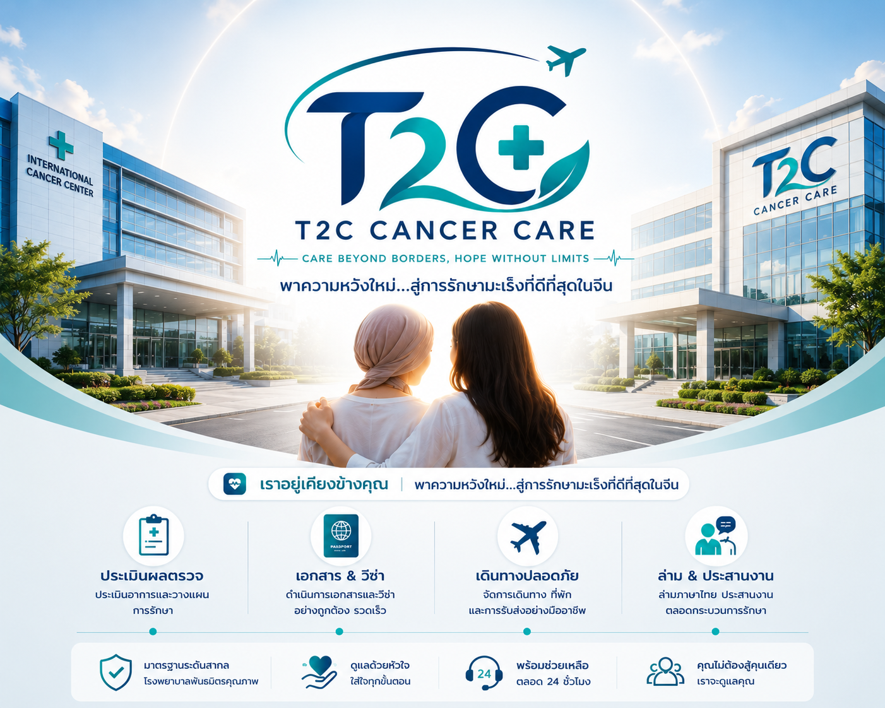

เรื่องราว ของการดูแล
จากประเทศไทยสู่ประเทศจีน ชมภาพบรรยากาศและประสบการณ์ ในเส้นทางการรักษากับ T2C
สอบถามผ่าน LINEเราช่วยเชื่อมผู้ป่วย ครอบครัว และโรงพยาบาลในประเทศจีน พร้อมดูแลเรื่องสำคัญที่เกี่ยวข้องกับการเข้ารับการรักษา


ทีมสำหรับผู้ป่วยไทยที่ต้องการเข้ารับการรักษามะเร็ง ในประเทศจีน เราทำหน้าที่เชื่อมต่อผู้ป่วย ครอบครัว และโรงพยาบาล เพื่อให้กระบวนการต่าง ๆ เข้าใจง่ายและเป็นระบบ
เพราะการรักษาในต่างประเทศ ควรเริ่มจากความเข้าใจ ความชัดเจน และทีมที่พร้อมอยู่ข้างผู้ป่วย
ใส่ใจทั้งผู้ป่วยและครอบครัว พร้อมช่วยให้เรื่องที่ยุ่งยากเข้าใจง่ายขึ้น
แยกสิ่งที่ต้องรู้และสิ่งที่ต้องเตรียม ให้เห็นภาพได้ง่าย
ทำงานระหว่างผู้ป่วย ครอบครัว และหน่วยงานที่เกี่ยวข้อง อย่างเป็นลำดับ
ช่วยให้ผู้ป่วยไม่ต้องจัดการ เรื่องสำคัญทุกอย่างเพียงลำพัง
จากประเทศไทยสู่ประเทศจีน ชมภาพบรรยากาศและประสบการณ์ ในเส้นทางการรักษากับ T2C
สอบถามผ่าน LINEแบ่งการดูแลออกเป็น 4 ด้านหลัก เพื่อให้ผู้ป่วยและครอบครัวเห็นภาพได้ง่าย
ช่วยเตรียมเอกสารทางการแพทย์ และติดต่อหน่วยงานที่เกี่ยวข้อง
ช่วยดูแลเรื่องเอกสาร และสิ่งที่ต้องเตรียมสำหรับการเดินทางไปประเทศจีน
ช่วยลดข้อจำกัดด้านภาษา ในการติดต่อและเข้ารับบริการ
ช่วยอำนวยความสะดวก ในเรื่องที่เกี่ยวข้องระหว่างการเข้ารับบริการ
5 ขั้นตอนหลัก เพื่อให้ผู้ป่วยและครอบครัว เห็นภาพตั้งแต่เริ่มต้นจนถึงการเข้ารับการรักษา
แจ้งข้อมูลและความต้องการเบื้องต้น
รวบรวมประวัติและผลตรวจที่จำเป็น
ส่งรายละเอียดและรับข้อมูลสำหรับขั้นตอนถัดไป
จัดเตรียมสิ่งที่จำเป็นก่อนออกเดินทาง
เข้าสู่กระบวนการตามแผนของโรงพยาบาล
T2C มุ่งสร้างความร่วมมือกับเครือข่ายด้านการแพทย์ ในประเทศจีน เพื่อช่วยเชื่อมผู้ป่วยไทย กับการดูแลที่เหมาะสมและเป็นระบบ
Connecting Thailand & Chinaหนึ่งในโรงพยาบาลที่รองรับ ผู้ป่วยต่างชาติในประเทศจีน

โรงพยาบาลด้านการรักษาโรคมะเร็ง ในเมืองกวางโจว ประเทศจีน ที่รองรับผู้ป่วยจากต่างประเทศ
เลือกช่องทางที่สะดวกสำหรับการติดต่อและส่งข้อมูล
ข้อมูลเบื้องต้นสำหรับผู้ป่วย และครอบครัวที่กำลังพิจารณาการรักษาในประเทศจีน
โดยทั่วไปควรมีประวัติการรักษา ผลตรวจทางห้องปฏิบัติการ ผลพยาธิวิทยา และภาพถ่ายทางการแพทย์ที่เกี่ยวข้อง
สามารถส่งเอกสารและข้อมูลที่มีอยู่ เพื่อใช้ประกอบการติดต่อกับโรงพยาบาลได้
รายละเอียดจะขึ้นอยู่กับแต่ละกรณี เช่น เอกสารส่วนตัว เอกสารทางการแพทย์ และรายละเอียดที่เกี่ยวข้องกับการเดินทาง
สามารถวางแผนการเดินทางร่วมกับผู้ป่วยได้ โดยรายละเอียดขึ้นอยู่กับความเหมาะสมของแต่ละกรณี
เริ่มจากแจ้งข้อมูลเบื้องต้น และเอกสารที่มีอยู่ จากนั้นทีมงานจะแนะนำลำดับขั้นตอนต่อไป